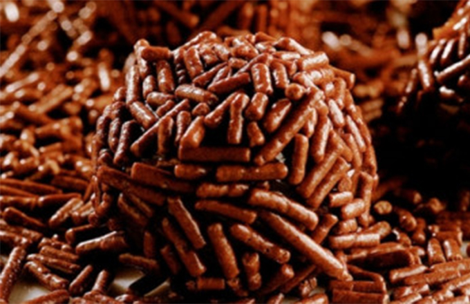

Buscar
Voltar para Receitas
❮

❯
Brigadeiro Caseiro
Tempo de preparo:
15 Minutos
Ingredientes:
1 lata (395g) de leite condensado
2 colheres (sopa) de chocolate em pó ou achocolatado
1 colher (sopa) de manteiga
Chocolate granulado para decorar
Modo de Preparo
Em uma panela, misture o leite condensado, o chocolate em pó e a manteiga.
Leve ao fogo médio, mexendo sem parar para evitar que grude no fundo.
Cozinhe até que a mistura desgrude do fundo da panela (cerca de 10 minutos).
Despeje o brigadeiro em um prato untado com manteiga e deixe esfriar.
Com as mãos untadas, modele bolinhas e passe no chocolate granulado.
Sirva em forminhas ou coma direto da colher!
Dicas adicionais:
Se quiser um brigadeiro mais cremoso para comer de colher, retire do fogo um pouco antes.
Para um sabor mais intenso, use chocolate meio amargo derretido no lugar do chocolate em pó.
Pode substituir o granulado por coco ralado, castanhas trituradas ou confeitos coloridos.

 1 lata (395g) de leite condensado
1 lata (395g) de leite condensado 2 colheres (sopa) de chocolate em pó ou achocolatado
2 colheres (sopa) de chocolate em pó ou achocolatado